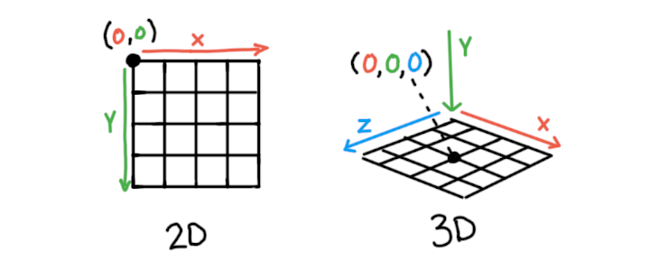
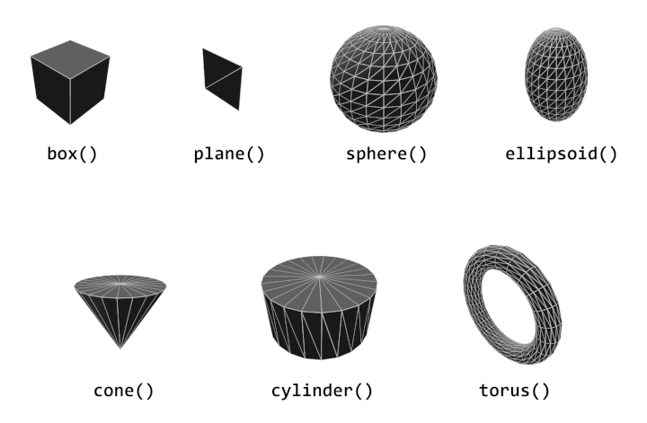

座標と変換
p5.jsは2Dグラフィックを作成する強力なツールですが、3Dグラフィックも作成できます。 このチュートリアルでは、p5.jsを使用して3Dスケッチを作成するための新しいコンセプトを紹介します。
WebGLとは？
WebGLは、Webブラウザ内で3Dグラフィックを作成するために必要なツールを提供するライブラリです。 簡単に言うと、それは我々に3Dの物体を配置して表示するためのあらゆる種類の数学的な操作を許可します。 p5.jsは、特別なWebGLモードを介してWebGLとの作業を容易にします。
3Dで作業することは、スケッチに動き、テクスチャ、ライティングなどが含まれる場合には特に多くの複雑さを導入します。 幸いなことに、コンピューターには、 特にピクセルや多くの空間内の多数の形状を扱う場合に重要なことが多数処理できる 特別なハードウェア、グラフィックスプロセッシングユニット（GPU）があります。
まず、createCanvas()に3番目のパラメータとしてWEBGLを渡すことで、p5.jsをWebGLを使用するように設定します。
function setup() {
createCanvas(windowWidth, windowHeight, WEBGL);
describe('a red box on a white background');
}
function draw(){
background(255);
fill(255,0,0);
box();
}
3D座標空間：3Dでの位置決め
2Dで作業する場合との最も基本的な違いは、もっとも明らかなものです。 それは、作業するための1つの追加次元があることです。 描画の要素の水平方向と垂直方向の位置（x軸とy軸）に加えて、3Dでは深度、z軸が追加されます。
2Dで描画する場合、点（0,0）は画面の左上隅にあります。 WebGLモードでは、スケッチの原点（0,0,0）は画面の中央にあります。 デフォルトでは、x軸は左から右、y軸は上から下、z軸は遠くから近づく方向を指します。
変形：3D図形の位置とサイズ
p5.jsにはいくつかのメソッドがあります:translate(), rotate(), と scale(), 。それらを使用して、オブジェクトを空間内に配置および方向付けできます。 これらの方法は、モデル行列として知られるものを影響します。 これらは、オブジェクトの変換としてまとめて扱われます。 これらのメソッドは、2Dおよび3D描画の両方で使用できます。
translate(): 物体を空間内で移動させる
translate() translate()は、指定された方向に原点を移動します。 この後に描かれたものは、その点に対して相対的に位置づけられます。 translate()は、x、y、zの値を引数として受け取ります。 上記のスケッチのスライダーを使って、ボックスの移動を変更して、各軸に沿ってどのように移動するかを見てください。 以下のコードは、box()形状の単純な移動を示しています。
...
// draw a box 100 units to the right
translate(100,0,0);
box();
..
rotate(): 物体を空間内で向きを変える
rotate() rotate()は、 それに続くものを再配置します。
3D空間内でオブジェクトを回転させるために使用できるいくつかの方法があります。 ほとんどの場合、軸の周りの回転を許可するメソッド、rotateX(), rotateY(), 、 rotateZ() などを呼び出すのが最も簡単です。 これらの各メソッドは、回転角度を指定する単一の引数を受け入れます。 上記の例のスライダーを動かして、各軸に対する回転の実行方法を確認してください。 以下のコードは、これらの各メソッドの使用方法を示しています。
...
// rotate X, Y, and Z axes by 45 degrees
rotateX(QUARTER_PI);
rotateY(QUARTER_PI);
rotateZ(QUARTER_PI);
box();
..
デフォルトでは、p5.jsは角度をラジアン単位で期待します。 ラジアンは、数値0〜TWO_PIを使用して角度を指定します。 度数を使用するには、radians()を使用して度数をラジアンに変換するか、angleMode(DEGREES)を使用します。
...
// rotate each axis by 45 degrees
rotateX(radians(45));
box();
//or
angleMode(DEGREES);
rotateY(45);
box();
..
また、2つ目の引数としてベクトルを使用することで、回転する軸を指定できる rotate() ことが できます。
scale（スケール）：空間でのサイズ
scale() 描画されるもののサイズを変更します。 ここまで説明した他のメソッドと同様に、x、y、zの値の引数を受け取ります。
変換の順序は重要です！
変換の順序は、最初は予測不可能に感じることがあります。各変換は常に次の変換に影響します。 例えば、rotate()の後にtranslate()が呼び出された場合、その移動の方向は回転に影響されます。 全体の座標系が回転して移動しているため、形状自体だけでなく、周りの座標系も動いていることになります。
変換は任意の順序で実行できますが、translate、rotate、そしてscaleを使用すると、最も直感的になります。 移動の後に回転を行うことで、新しい位置を中心に回転する効果が得られます。
下の例では、translate()とrotateY()の順序を変更して、どのようにオブジェクトが描画されるかを確認してみてください。
p5.jsには、変形を適用するタイミングを制御できるいくつかのメソッドがあります。push() そして、 pop() 。push() と pop() は、オブジェクトを個別に移動するのを簡単にします。 push() メソッドは現在の変形とスタイル設定を保存します。 そして、新しい変形を行った後、pop() メソッドを使用して元の変形に戻ります。 その結果、push() と pop() の間で行われた変形やスタイル変更は、 コードのその部分に対してのみ分離されます。 push() と pop() を使用しない場合、すでに行われた変形を追跡する必要がありますが、これは複雑になり、追跡が難しくなります。 次の例を考えてみてください。この例では、スケッチに2つの箱を配置します。 2番目のボックスをpush() と pop() を使用せずに位置に配置するには、 最初の変形を考慮する必要があります。 これは、より複雑な3Dシーンでは追跡が困難な場合があります。
// draw a box 100 units to the right
translate(100,0,0);
box();
// now, to draw another box 100 units to the left
// since transformations accumulate, we have to
// subtract 200 to do this
translate(-200,0,0);
box();
これで、push() と pop() を使用した同じコードを試してみましょう。 これで、座標系がどこにあるかを覚える必要がなく、オブジェクトを簡単に移動できます。
push(); // detach our coordinate system
// draw a box 100 units to the right
translate(100,0,0);
box();
pop(); // return to our original coordinate system
push(); // detach our coordinate system
// draw a box 100 units to the left
translate(-100,0,0);
box();
pop(); // return to our original coordinate system
これはもう少し高度なトピックですが、 これらの変換はそれぞれモデル行列と呼ばれるものに影響を与えます。 変換行列はビュー行列と射影行列と結合され、 どちらもカメラの視点をシミュレートするのに役立ちます。 そしてこの結合により、私たちの3Dシーンが作成されます！
モデルビュープロジェクションについてもっと学ぶ下の例で、push()とpop()を取り除いて、描かれる2番目のオブジェクトに 変換がどのように影響するかを試してみてください。
3Dの基本形状
これまでbox()のみを使用していましたが、p5.jsには7つの異なる事前定義済みジオメトリがあり、 スケッチで使用できます。これらの基本的な事前定義済みジオメトリは「プリミティブ」と呼ばれることがよくあります。
これらのプリミティブ形状メソッドは次のとおりです：box(), plane(), sphere(), ellipsoid(), cone(), cylinder(), 、 torus().
カスタムジオメトリを作成することもできます。 スクラッチから作成するか、別のプログラムで作成した3Dモデルから作成することもできます。 カスタムジオメトリに関する詳細は、カスタムジオメトリのチュートリアル.
結論
基本的な3Dシーンの制御について、 座標空間、変換、および基本的な形状について学びました。 この後の「WebGL入門」シリーズのチュートリアルでは、 カスタムジオメトリの導入、 シーンの外観の微調整、基本的なシェーダープログラミングの導入など、 スケッチをさらに進化させるための内容が紹介されます。
その他のチュートリアル
このチュートリアルは、p5.jsでWebGLを使用する基本についてのシリーズの一部です。以下の他のチュートリアルをすべてチェックしてください。
- 座標と変換 (現在ここ)
- WebGLでカスタムジオメトリの作成
- スタイルと外観
- シェーダー入門
用語集
GPU
GPU（グラフィックス処理ユニット）は、 多数の演算を並列に処理できるように特化された ハードウェアであり、3Dグラフィックスに特に強力です。
モデル
ファイルに保存および読み込みできるカスタム3Dジオメトリ。
マトリックス
ジオメトリの変換に関する情報を保持できる特別な配列。
カメラ
3Dシーンの視点。
変換
スケール、回転、移動の組み合わせを指し、変形とも呼ばれます。
頂点
3D空間の位置x、y、zを持つ点。
面
3つの点からなる集合体で、固体の表面を作り出します。